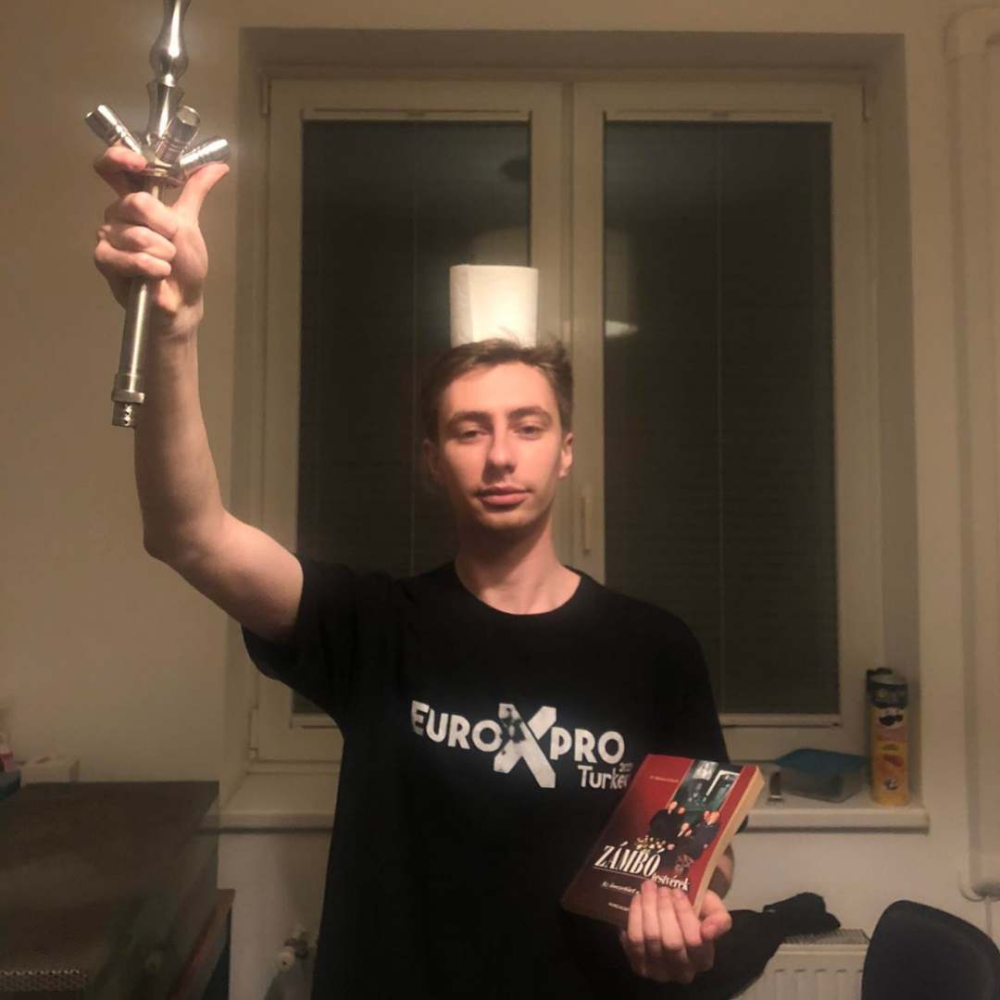
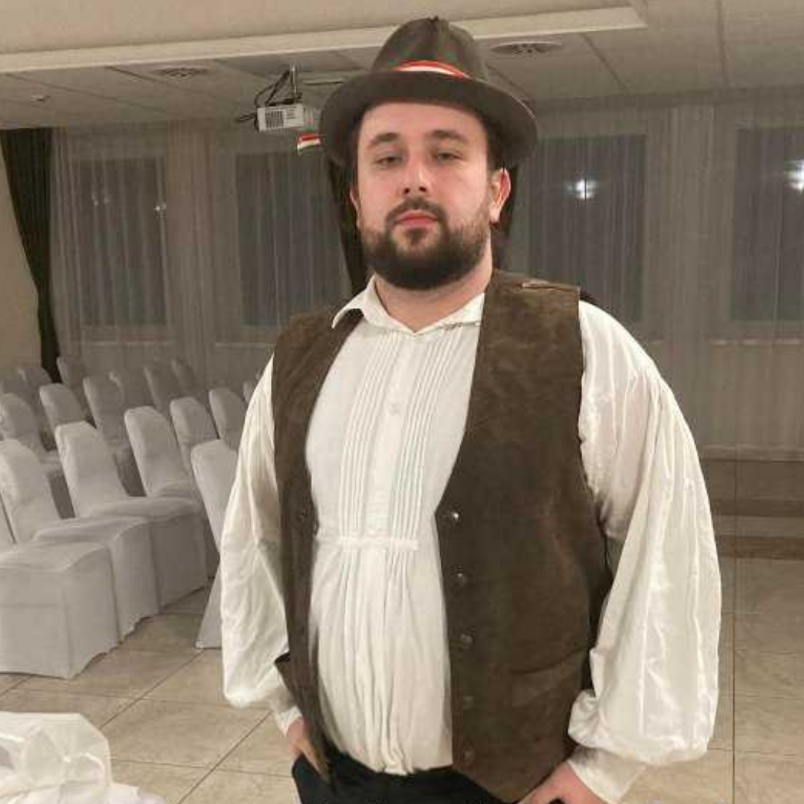
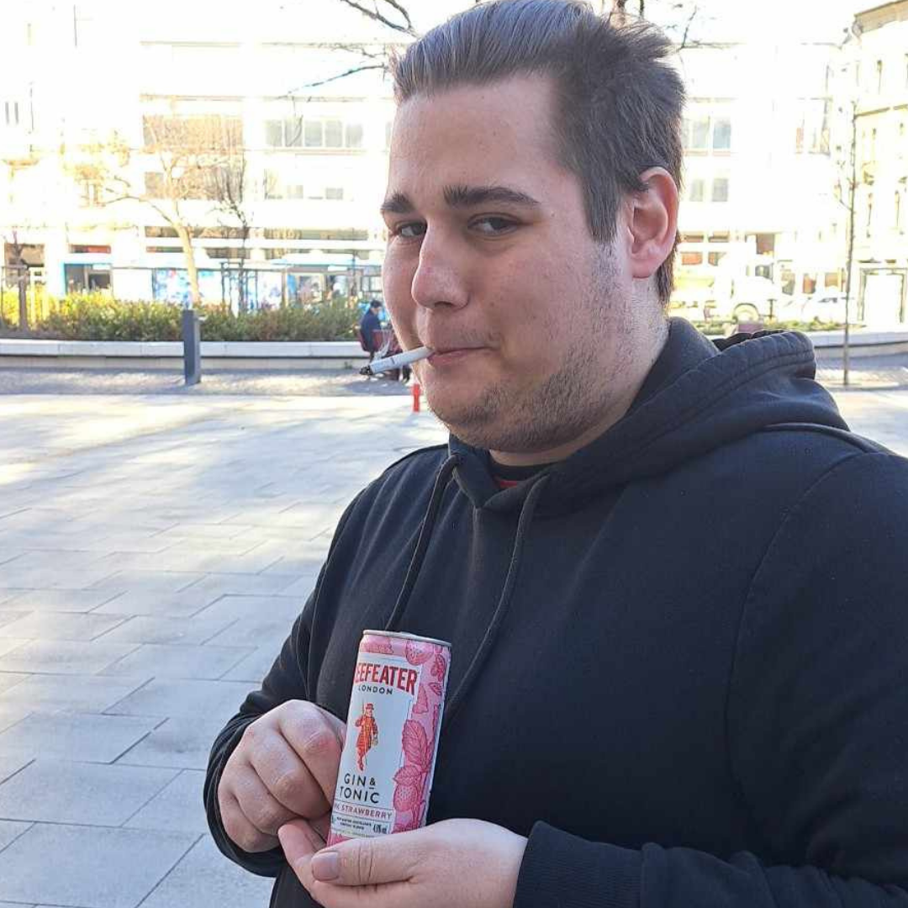
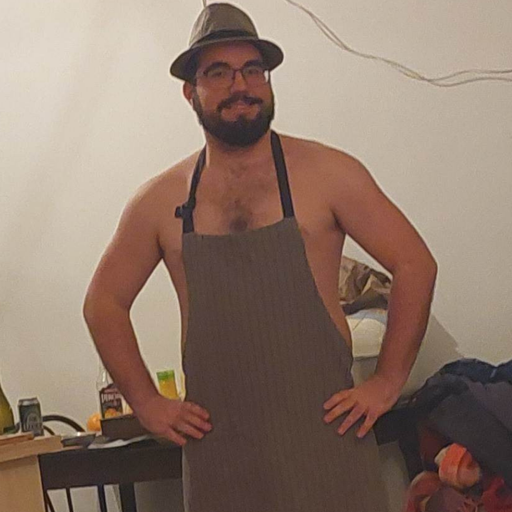
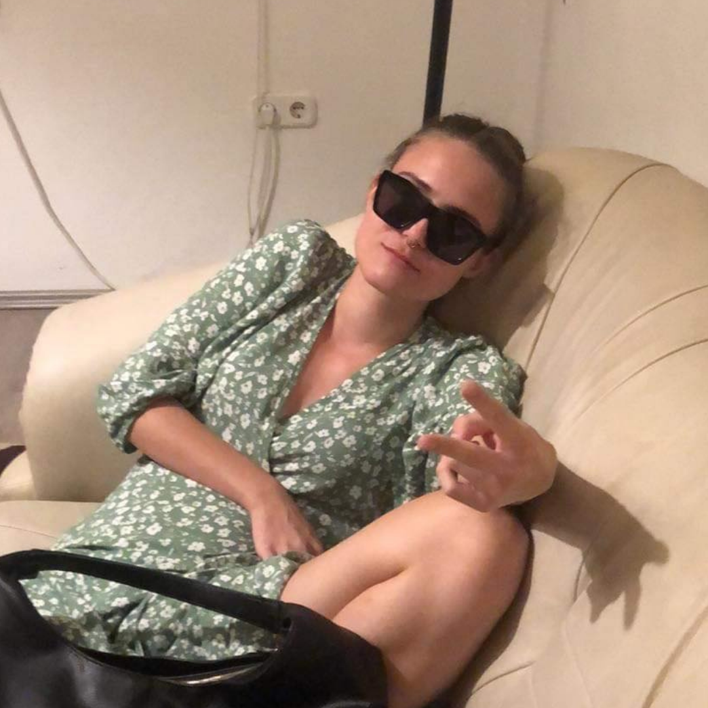
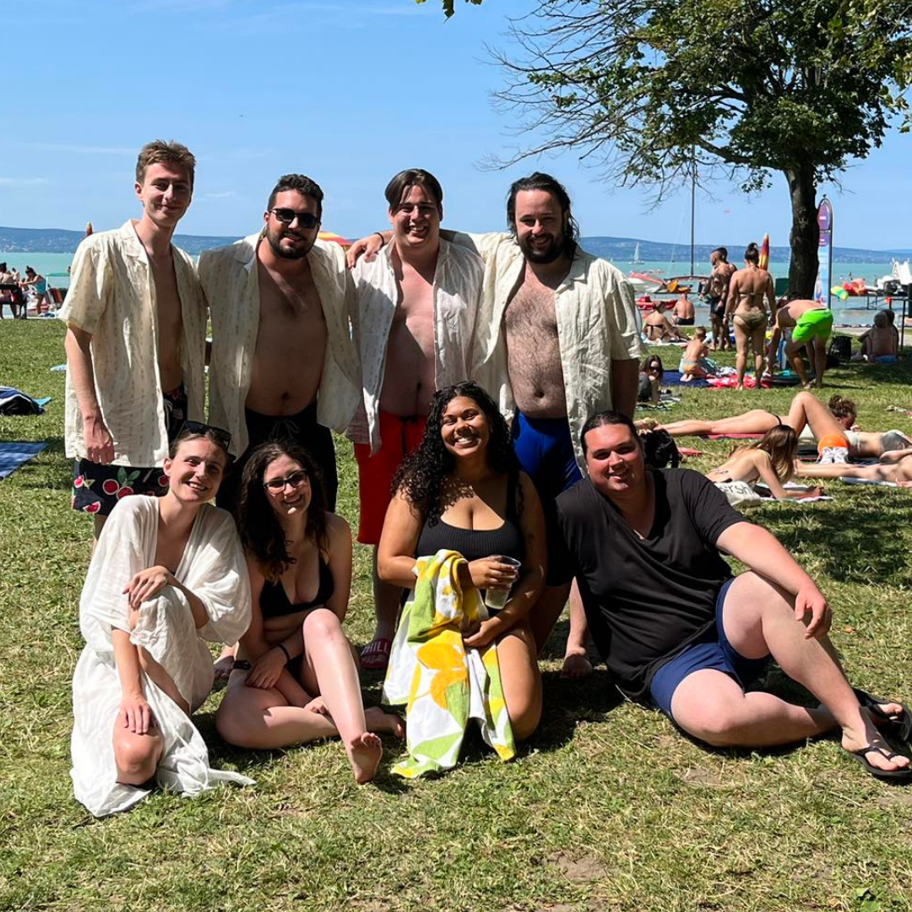
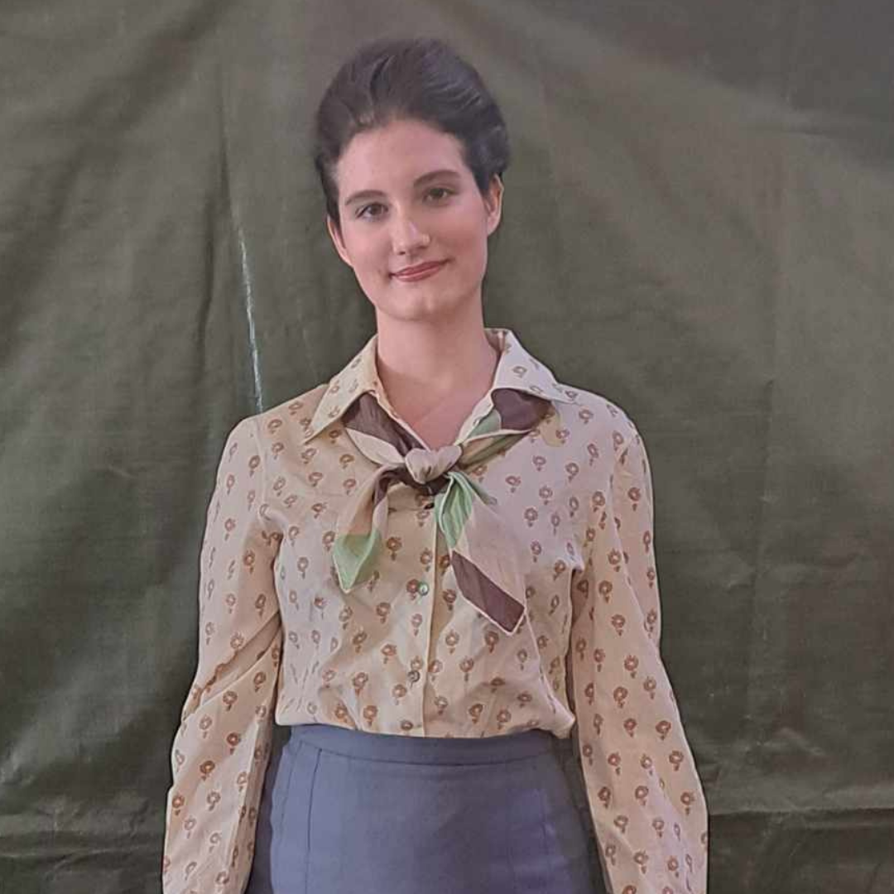
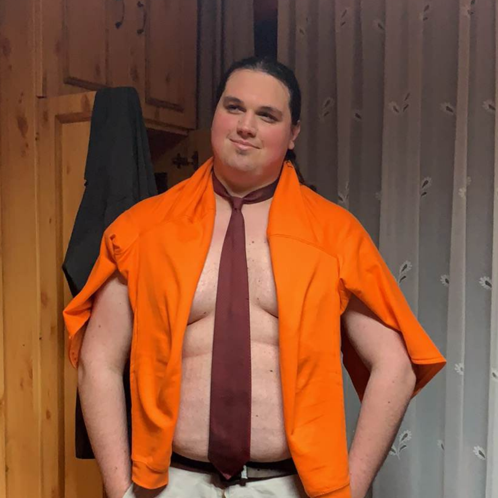
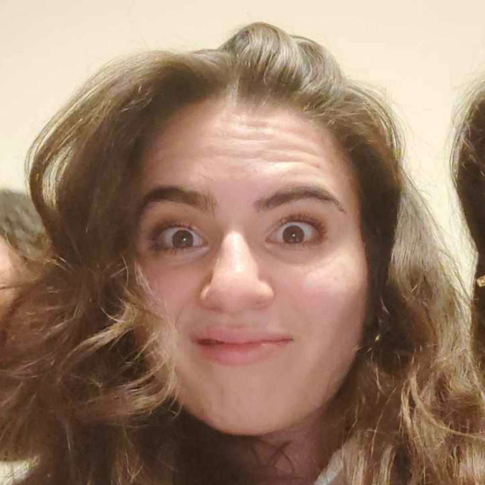

Hala
Ki a faszom az a Máté?
Halasi Máté a szíve, lelke, mája és bankkártyája a csapatnak. Drága kis csapatunk első tagja, aki pillanatok alatt képes a teljes csapatot összehívni egy messenger üzenettel. Legendák tartják, hogy alkoholizmusa felett maximális kontrollja van, amit fogadásban bizonyított is. A történet szerint olyan hatalmas vereséget szenvedtek kihívói, azóta is tartoznak neki egy üveg Ginnel. A teste sejtjei felett hatalma van, amikor snüsszt helyez a testében, a párnácskák kapnak nikotin függőséget és Taktikai hányás koronáztlan királya. Már akkor is bányászott mielőtt ez divat lett volna Kínában, és munka óra száma magasabb mint az ikertornyok azok fénykorában.
Flory
Koszos Csibe 🐣
Flórián, csapatunk második fő alapítótagja, akit jellegzetes szőrzetéről lehet legkönnyebben felismerni, vagy tökéletes magyar apu testéről. Legendák úgy tartják, hogy hogy fürdés után kénytelen megrázni magát különben a bundája sosem fog megszáradni. Multitasking tökéletes példánya, állítólag egyszerre foglalkozott 8 dologgal miközben kihordott két agyvérzést, meg egy ikerpárt miközben kedvesének állt papucsnak. Pénisszel nem rendelkezik, de ezt azzal szoka magyarázni, hogy a Zalai felvággotnak adományozott belőle, amivel sikeresen kirántotta őket a csődből, és azóta virágzik a vállalat.
Somci
ChillyCheese 🧀
Gábor, csapatunk harmadik fő alapítótagja, akit két féleképpen lehet felismerni. Ha távol van, akkor egetrengető hangja rettegést okoz minden élőlénynek aki azt hallja, legyen az halandó vagy isten. Közelebbről tökéletes 130 literes kukászsák teste és haja kitűnik bármilyen tömbegből, ahol az emberek max 165 cm magasak. Soma az előző két kollégával alkotta meg az első csoportot messengeren, ahol a kezdeti Népszi közéletét tárgyalták, ítélték. Professzionális sün kereső, vagy ahogy Ő hívja őket Sütnik. Éjszakai életmódot élő rágcsáló, aki alkohol fejében még több alkoholt ránt ki a zsebéből, amivel őszintére issza magát.
Márki
Daddy Cool
Az utolsó alapítótagja a eredeti négyesnek. Budget Daddyként vagy Törp-apaként működik, nem pénzügyileg hanem érzelmileg. Jellegzetes járásából egyértelműen felismerhető, ha a mosdót vette célul átfestés indítékából. Közepesen összeszedett, lelke kockahasú, közepesen jól kinéző egyéniség. Introvertáltak tökéletes példánya, ha többször ki kell mozdulni a lakásból, akkor heves fájdalmak közepette fekszik vissza az ágyba és nem mozdul ki semerre. Azt hiszi, hogy mindig igaza van, viszont előfordul vele is, hogy téved. Szerencsére ez csak az esetek pár százalékában jelentős. Bölcsessége határtalan viszont tengerek keretezik azt be. Hajója van amivel ezt behajózza, sajnos az papírból van ezért mindig újat kell neki hajtogatni, amit mivel ilyen öreg már elfelejtett, hogyan kell. Cserébe van internete van amivel, ki tudja keresni, viszont nincs neki mobil nete... hol is tartottam? Ja szerintem egy paraszt amúgy akire mindenki azt hiszi hogy poénkodik pedig közben komolyan gondolja.
Fruszi
Tefal Kapitány
Fruzsina, aki első látásra nőként jelenik meg, viszont ne ítéljünk a borító alapján, ugyanis Ő becses neve a csoportban Béla. Ezt a név eredete különös balladai homály fedi, elképzelhető, hogy valami kettős egyénisége van. A hangok a fejében többször okoznak neki felfordulást az életében, de az sem segít enyhe alkoholizmusa kényszeríti a gondolkodásra. Ellenben irigylésre méltó mennyi alkoholt képes törékeny testébe beletuszkolni. Crusholja önmagát ami teljesen jogos, hiszen pozitív visszacsatolásként a dániai vendégmunkások szemei keresztűzében létezett. Általános hívó szavai a következők: Béla, Deszka, Tefal Kapitány, Serpenyő-szexuális (Panszexuális), A Buzi Nő, Tajgetosz Pozitív, Evolúciós zsákutca, Fogyatékos.
Netti
HP Chapter 6
Aki nem olvasta volna a Harry Pottert, az bizony nem maradt le semmiről, nézzen inkább Star Wars-ot. De vissza Nettire Azt mondták nekünk, hogy borzalmasan rasszisták és szexisták vagyunk, ezért tűnt Netti felvenni a csoportba, hiszen ezzel kimaxoltuk a diverzitást nemi és rassz szempontból is. Jelenleg legkevesebbet jelenlevő tagunk, reméljük gyakrabban látjuk őt a jövőben. Kedvenc Lábbelije Flórián, itala a Gin-Tonic. Általános tulajdonsága, hogy FemiNáci, aki a nőket mindenki felé szeretné emelni, még akkoris ha azt mondja hogy csak egyenlőséget akar. Ez egy több lépcsős kisebbségi komplexus, de mi így szeretjük őt.
Csengu
Petra anya
Csengu, ahogy azt a középkorban illik beházasodott a csoportba, ezáltal a Daddy szerepkör mellé egy Mommy is dukált. Legjobb tulajdonsága, hogy sütivel látja el a Népszínház tagokat a Tájm idejére, és törődő természetével csábítja el a szíveket. Legrosszabb tulajdonsága, hogy ha számolni kell segítségére ne számítsunk. A rükverc és a kuplungulás nemezise, mind emlékszünk az Aldis parkolós esetre. Hasonló képpen Somához hangja rettentést jelenti az ott lakókban viszont ezek sokkal speciálisabb úgymond "szexuálisabb" hangok amik különbőző gyermeknemzési praktikákból következik.
Levi
A pedofil wishes Szentesi
Levente, akit előbb mindenki ismerte, többszir is járt már eseményeken vendégként, viszont valahogy sose csatlakozott még a csapathoz, viszont ez csak idő kérdése volt idáig. Amit róla kell tudni, hogy Ő hatalmas, de tényleg, kibaszott nagy. Mármint értitek. Magas meg széles is. Az eszét legjobban úgy tudtuk meghatározni, mint két követ, ami akkor szül értelmes gondolatot amikor a fejben egymásnak csapódnak így szikrázva. Rá is igaz a kedves óriás kifejezés, mármint az óriás, de amúgy a kedves is. Képzelete nem ismer határt ezáltal a faszsága sem. Hobbija, hogy SMOT-kat ír, WARHAMMER figurákat épít, Playstatiönön játszik, édesanyját árulja, apja börtönben, bárhol hajtogatsz rajta tudod mit... női nemiszervet.
Hanni
Csári Kannuli 🐽
Hanna a csoport gyereke, örök fiatal, pedig majdnem a legöregebb. Teljesen átlagos testmagasságú, van vagy 195 cm magas. Ezen a tulajdonságán nem segít, hogy előszeretettel ugra-bugrál mint Tigris a Micimackóból. Kezdő bányászó még Ő, reméljük, hogy jobban kezeli ezt a részét az életének, mint egy bizonyos halacska, ellenben eddig erre jó példát keveset láttunk eddig. Tonhalas tortillát szokott enni, most ezt döntsd el, hogy jó vagy rossz-e. Ha plafont kell festeni, akkor tökéletes segítség. Ha dolgozik vagy tanul, akkor 1-2 óráként fogyassza a magas koffeintartalmú közepes minőségű presszót.








